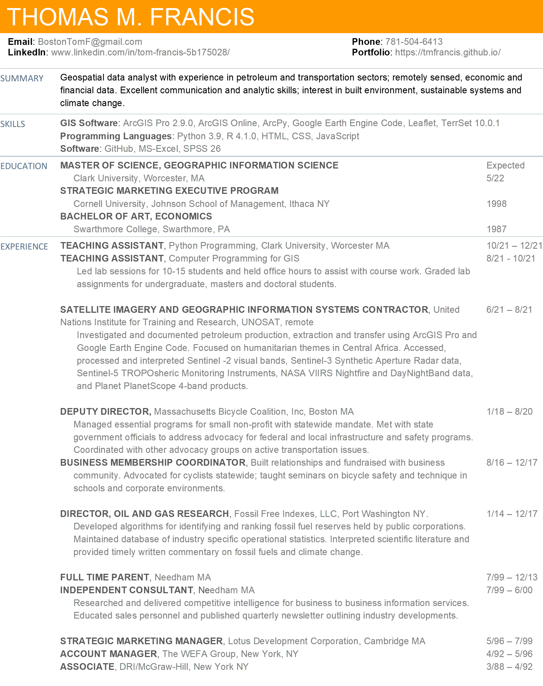

Based in Eastern Massachusetts, I currently reside in Worcester while completing a graduate degree in GIS at Clark University. My experience in economic consulting, strategic marketing, parenting, climate change & transportation advocacy all influence how I interact with spatial data.
I believe that strong skill sets in both liberal arts and science is key to developing actionable analyses and making data driven insights available to decision makers for improved outcomes.
I seek post grad career opportunities in risk assessment, urban planning or supply chain management. Willing to relocate.
Click on the my resume to download:

Edge (prior version 18), or in Safari (prior version 10.1).